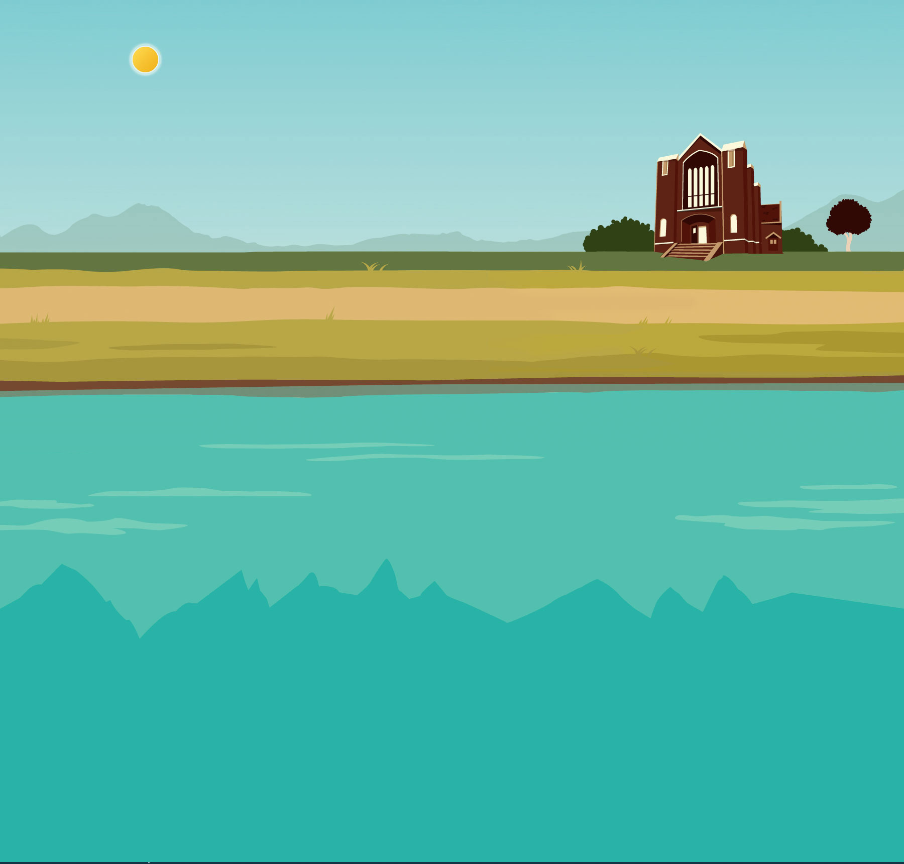

Loading generated/review.json…
Assets and edge checks
Moving-part assembly
Master-frame registration at a useful inspection size. The click-reaction and reduced-motion controls also apply here.
Palette and composition reference
Original daytime palette

Current scene composition

Judge notes
Inspect both tile densities, the phone view, cut-out edges and animated joints. Acceptance is a visual decision; dimensions alone do not pass an asset.